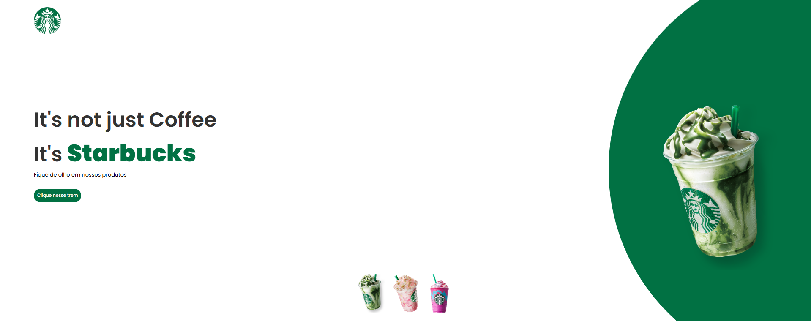

Meu Projeto
Descrição curta do projeto. Tecnologias usadas: HTML, CSS, JavaScript.
Luís Eduardo
Crio interfaces rápidas, acessíveis e organizadas usando HTML, CSS e JavaScript. Aberto a freelas e novas oportunidades.
Oi, eu sou o Luis Eduardo, tenho 23 anos e sou apaixonado por transformar ideias em experiências digitais. Atualmente curso Engenharia de Software e me especializo em Front-End, com foco em HTML, CSS e JavaScript. Como desenvolvedor em início de carreira, busco entregar interfaces modernas, responsivas e intuitivas, sempre priorizando a semântica, a usabilidade e a performance. Já desenvolvi projetos que envolvem desde a criação de layouts limpos e organizados até integrações simples com APIs e WhatsApp, e sigo aprimorando minhas habilidades a cada desafio.
Descrição curta do projeto. Tecnologias usadas: HTML, CSS, JavaScript.